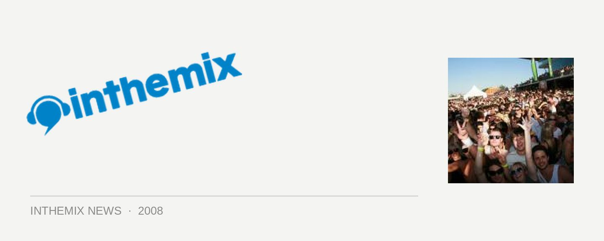

Australia's 1st Future Music Festival photos live on ITM
This is the one we’ve been waiting for… Last year the Future Music Festival was voted by ITMers as the #1 party of choice, and over the weekend the national tour kicked off again in Brisbane and Perth. And we’ve got all the up to the minute coverage here on ITM: have a look at the photos from the Brisbane and Perth events, as well as reading the ITM rundown of how it all happened on the day.
Check out the photos from Future Music Festival in Brisbane..
Check out the photos from Future Music Festival in Perth.
Check out the review from Future Music Festival in Brisbane.
Check out the review from Future Music Festival in Perth.
From all the reports flooding in from the Brisbane event and the ITM forums, it appears that this year’s edition of FMF lived up to punter expectations, both in terms of the musical performances and the overall organization of the event. The set that received the most consistent amount of rave reviews was that of rising progressive trance star Markus Schultz. The comments have been pretty much unanimous: “His set at FMF Brisbane was one for the record books. AMAZING,” or alternatively, “Markus Schulz was absolutely amazing, had the crowd eating out of the palm of his hand,” or “the perfect mix of melodic and driving.” And so on.
While John Digweed received mixed reviews (with some suggesting that it had a lot to do with his earlier timeslot), Germany’s Sven Vath predictably delivered a set of top-quality techno. But from the sounds of things he was up to his usual trashbag ways; “Watched first 20 mins of Vath in which he spent 18 mins with his hands in the air,” said one ITMer. “Someone told me he used to mix with 6 turntables… Not anymore clearly.” But even if he occasionally took his eyes off the decks, it had no impact on the quality of the music – he “smashed it,” apparently.
While we’ve heard a few festival horror stories this party season, the organisation of the Brisbane FMF was apparently handled with flair. “Yeah, it was one of the best festivals I have been to in years and all of my friends agreed,” claimed one of the Queensland ITM community regulars. “It was spread out over majority of the racecourse, so all of the stages were decent sizes, had bits of shade and lots of grassed areas.” And this assessment is consistent with most of the other comments thrown down in the forums: “I think that the production of this festival was fantastic. They definitely used the space very well, there wasn’t a bottleneck to be seen.”
And if there was one act that had more pulling power than anyone else, it was The Chemical Brothers. And it sounds like the UK duo have really taken it to the next level, as far as mind-boggling spectacle goes. As one ITMer so succinctly put it, “Who needs a fukken light pyramid when you can throw down a light show like that?” But pictures speak louder than words, so check out the stunning clips below to see for yourself what went down at Doomben Racecourse on Saturday night…
Have you had a look at ITM’s Future Music Festival page yet? It’s packed to the brim with news, interviews, DJ mixes and more, it’s the most comprehensive guide to the tour you’ll find anywhere. Stay tuned for more coverage!